Chapter 7 Simulation 1
7.1 Load packages and set plotting theme
library("knitr")
library("kableExtra")
library("MASS")
library("patchwork")
library("tidyverse")theme_set(theme_classic() + #set the theme
theme(text = element_text(size = 20))) #set the default text size
opts_chunk$set(comment = "",
fig.show = "hold")7.2 Sampling
7.2.1 Drawing numbers from a vector
numbers = 1:3
numbers %>%
sample(size = 10,
replace = T) [1] 2 2 1 1 2 3 3 2 2 1Use the prob = argument to change the probability with which each number should be drawn.
numbers = 1:3
numbers %>%
sample(size = 10,
replace = T,
prob = c(0.8, 0.1, 0.1)) [1] 3 1 1 2 1 1 1 1 2 1Make sure to set the seed in order to make your code reproducible. The code chunk below may give a different outcome each time is run.
numbers = 1:5
numbers %>%
sample(5)[1] 5 2 1 4 3The chunk below will produce the same outcome every time it’s run.
set.seed(1)
numbers = 1:5
numbers %>%
sample(5)[1] 1 4 3 5 27.2.2 Drawing rows from a data frame
Generate a data frame.
set.seed(1)
n = 10
df.data = tibble(trial = 1:n,
stimulus = sample(c("flower", "pet"), size = n, replace = T),
rating = sample(1:10, size = n, replace = T))Sample a given number of rows.
set.seed(1)
df.data %>%
slice_sample(n = 6,
replace = T)# A tibble: 6 × 3
trial stimulus rating
<int> <chr> <int>
1 9 pet 9
2 4 flower 5
3 7 flower 10
4 1 flower 3
5 2 pet 1
6 7 flower 10set.seed(1)
df.data %>%
slice_sample(prop = 0.5)# A tibble: 5 × 3
trial stimulus rating
<int> <chr> <int>
1 9 pet 9
2 4 flower 5
3 7 flower 10
4 1 flower 3
5 2 pet 1Note that there is a whole family of slice() functions in dplyr. Take a look at the help file here:
help(slice)7.3 Working with distributions
Every distribution that R handles has four functions. There is a root name, for example, the root name for the normal distribution is norm. This root is prefixed by one of the letters here:
| letter | description | example |
|---|---|---|
d
|
for “density”, the density function (probability function (for discrete variables) or probability density function (for continuous variables)) |
dnorm()
|
p
|
for “probability”, the cumulative distribution function |
pnorm()
|
q
|
for “quantile”, the inverse cumulative distribution function |
qnorm()
|
r
|
for “random”, a random variable having the specified distribution |
rnorm()
|
For the normal distribution, these functions are dnorm, pnorm, qnorm, and rnorm. For the binomial distribution, these functions are dbinom, pbinom, qbinom, and rbinom. And so forth.
You can get more info about the distributions that come with R via running help(Distributions) in your console. If you need a distribution that doesn’t already come with R, then take a look here for many more distributions that can be loaded with different R packages.
7.3.1 Plotting distributions
Here’s an easy way to plot distributions in ggplot2 using the stat_function() function. We take a look at a normal distribution of height (in cm) with mean = 180 and sd = 10 (as this is the example we run with in class).
ggplot(data = tibble(height = c(150, 210)),
mapping = aes(x = height)) +
stat_function(fun = ~ dnorm(., mean = 180, sd = 10))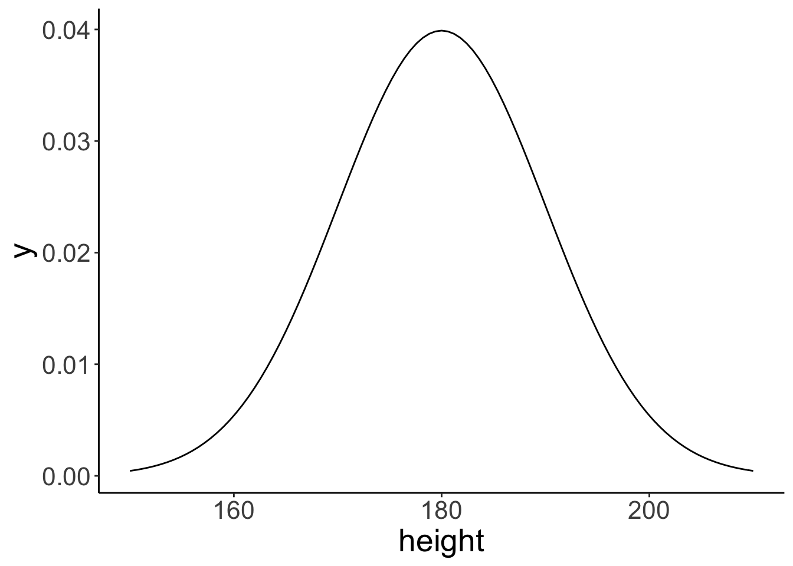
Note that the data frame I created with tibble() only needs to have the minimum and the maximum value of the x-range that we are interested in. Here, I chose 150 and 210 as the minimum and maximum, respectively (which is the mean +/- 3 standard deviations).
The stat_function() is very flexible. We can define our own functions and plot these like here:
# define the breakpoint function
fun.breakpoint = function(x, breakpoint){
x[x < breakpoint] = breakpoint
return(x)
}
# plot the function
ggplot(data = tibble(x = c(-5, 5)),
mapping = aes(x = x)) +
stat_function(fun = ~ fun.breakpoint(., breakpoint = 2))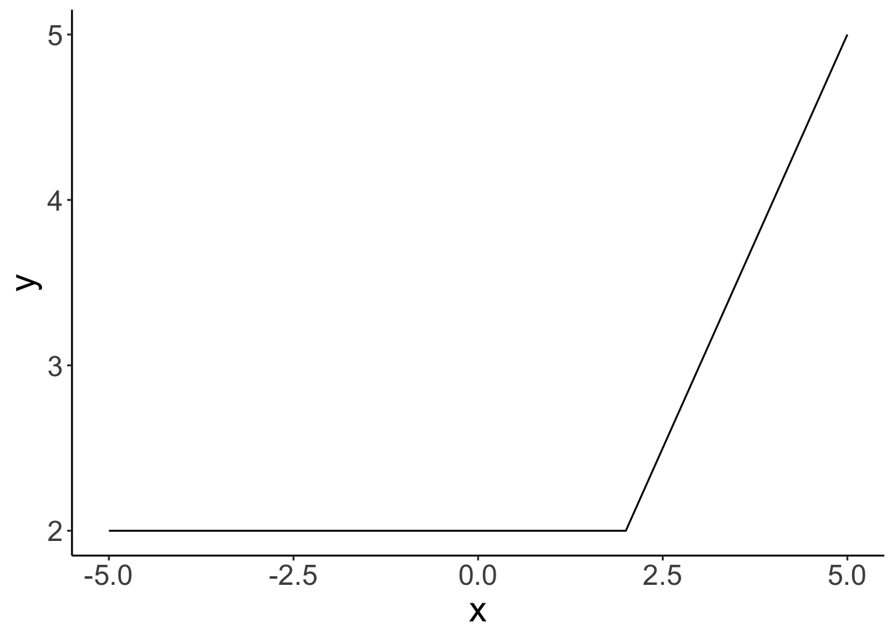
Here, I defined a breakpoint function. If the value of x is below the breakpoint, y equals the value of the breakpoint. If the value of x is greater than the breakpoint, then y equals x.
7.3.2 Sampling from distributions
For each distribution, R provides a way of sampling random number from this distribution. For the normal distribution, we can use the rnorm() function to take random samples.
So let’s take some random samples and plot a histogram.
# make this example reproducible
set.seed(1)
# define how many samples to draw
tmp.nsamples = 100
# make a data frame with the samples
df.plot = tibble(height = rnorm(n = tmp.nsamples, mean = 180, sd = 10))
# plot the samples using a histogram
ggplot(data = df.plot,
mapping = aes(x = height)) +
geom_histogram(binwidth = 1,
color = "black",
fill = "lightblue") +
scale_x_continuous(breaks = c(160, 180, 200)) +
coord_cartesian(xlim = c(150, 210), expand = F)
# remove all variables with tmp in their name
rm(list = ls() %>% str_subset(pattern = "tmp."))
Let’s see how many samples it takes to closely approximate the shape of the normal distribution with our histogram of samples.
# make this example reproducible
set.seed(1)
# play around with this value
# tmp.nsamples = 100
tmp.nsamples = 10000
tmp.binwidth = 1
# make a data frame with the samples
df.plot = tibble(height = rnorm(n = tmp.nsamples,
mean = 180,
sd = 10))
# adjust the density of the normal distribution based on the samples and binwidth
fun.dnorm = function(x, mean, sd, n, binwidth){
dnorm(x = x, mean = mean, sd = sd) * n * binwidth
}
# plot the samples using a histogram
ggplot(data = df.plot,
mapping = aes(x = height)) +
geom_histogram(binwidth = tmp.binwidth,
color = "black",
fill = "lightblue") +
stat_function(fun = ~ fun.dnorm(x = .,
mean = 180,
sd = 10,
n = tmp.nsamples,
binwidth = tmp.binwidth),
xlim = c(min(df.plot$height), max(df.plot$height)),
size = 2) +
annotate(geom = "text",
label = str_c("n = ", tmp.nsamples),
x = -Inf,
y = Inf,
hjust = -0.1,
vjust = 1.1,
size = 10,
family = "Courier New") +
scale_x_continuous(breaks = c(160, 180, 200)) +
coord_cartesian(xlim = c(150, 210), expand = F)
# remove all variables with tmp in their name
rm(list = ls() %>% str_subset(pattern = "tmp.")) With 10,000 samples, our histogram of samples already closely resembles the theoretical shape of the normal distribution.
With 10,000 samples, our histogram of samples already closely resembles the theoretical shape of the normal distribution.
To keep my environment clean, I’ve named the parameters tmp.nsamples and tmp.binwidth and then, at the end of the code chunk, I removed all variables from the environment that have “tmp.” in their name using the ls() function (which prints out all variables in the environment as a vector), and the str_subset() function which filters out only those variables that contain the specified pattern.
7.3.3 Understanding density()
First, let’s calculate the density for a set of observations and store them in a data frame.
# calculate density
observations = c(1, 1.2, 1.5, 2, 3)
bandwidth = 0.25 # bandwidth (= sd) of the Gaussian distribution
tmp.density = density(observations,
kernel = "gaussian",
bw = bandwidth,
n = 512)
# save density as data frame
df.density = tibble(x = tmp.density$x,
y = tmp.density$y)
df.density %>%
head() %>%
kable(digits = 3) %>%
kable_styling(bootstrap_options = "striped",
full_width = F)| x | y |
|---|---|
| 0.250 | 0.004 |
| 0.257 | 0.004 |
| 0.264 | 0.005 |
| 0.271 | 0.005 |
| 0.277 | 0.005 |
| 0.284 | 0.006 |
Now, let’s plot the density.
ggplot(data = df.density,
mapping = aes(x = x, y = y)) +
geom_line(size = 2) +
geom_point(data = enframe(observations),
mapping = aes(x = value, y = 0),
size = 3)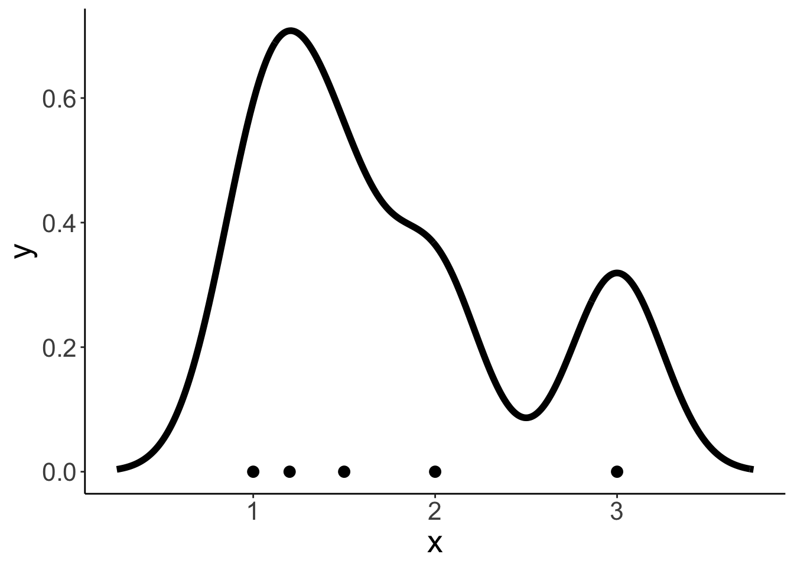
This density shows the sum of the densities of normal distributions that are centered at the observations with the specified bandwidth.
# add densities for the individual normal distributions
for (i in 1:length(observations)){
df.density[[str_c("observation_",i)]] = dnorm(df.density$x,
mean = observations[i],
sd = bandwidth)
}
# sum densities
df.density = df.density %>%
mutate(sum_norm = rowSums(select(., contains("observation_"))),
y = y * length(observations))
df.density %>%
head() %>%
kable(digits = 3) %>%
kable_styling(bootstrap_options = "striped",
full_width = F)| x | y | observation_1 | observation_2 | observation_3 | observation_4 | observation_5 | sum_norm |
|---|---|---|---|---|---|---|---|
| 0.250 | 0.019 | 0.018 | 0.001 | 0 | 0 | 0 | 0.019 |
| 0.257 | 0.021 | 0.019 | 0.001 | 0 | 0 | 0 | 0.021 |
| 0.264 | 0.023 | 0.021 | 0.001 | 0 | 0 | 0 | 0.022 |
| 0.271 | 0.024 | 0.023 | 0.002 | 0 | 0 | 0 | 0.024 |
| 0.277 | 0.027 | 0.024 | 0.002 | 0 | 0 | 0 | 0.026 |
| 0.284 | 0.029 | 0.026 | 0.002 | 0 | 0 | 0 | 0.028 |
Now, let’s plot the individual densities as well as the overall density.
# colors of individual Gaussian distributions
colors = c("blue", "green", "red", "purple", "orange")
# original density
p = ggplot(data = df.density, aes(x = x, y = y)) +
geom_line(size = 2)
# individual densities
for (i in 1:length(observations)){
p = p + stat_function(fun = "dnorm",
args = list(mean = observations[i], sd = bandwidth),
color = colors[i])
}
# individual observations
p = p + geom_point(data = enframe(observations),
mapping = aes(x = value, y = 0, color = factor(1:5)),
size = 3,
show.legend = F) +
scale_color_manual(values = colors)
# sum of the individual densities
p = p +
geom_line(data = df.density,
aes(x = x, y = sum_norm),
size = 1,
color = "red",
linetype = 2)
p # print the figure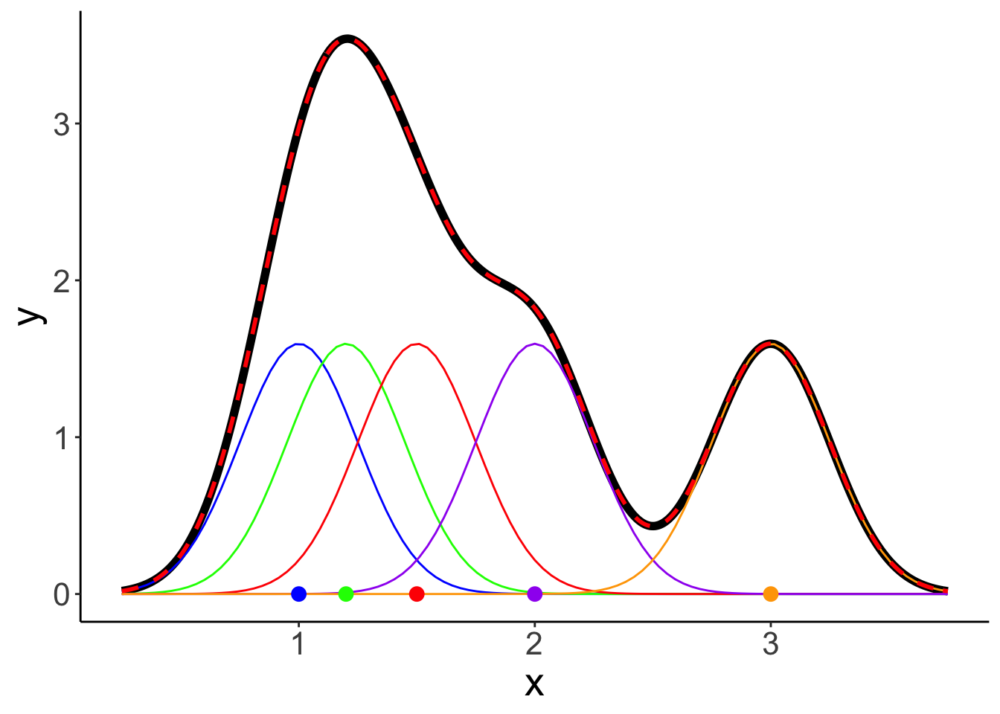
Here are the same results when specifying a different bandwidth:
# colors of individual Gaussian distributions
colors = c("blue", "green", "red", "purple", "orange")
# calculate density
observations = c(1, 1.2, 1.5, 2, 3)
bandwidth = 0.5 # bandwidth (= sd) of the Gaussian distribution
tmp.density = density(observations,
kernel = "gaussian",
bw = bandwidth,
n = 512)
# save density as data frame
df.density = tibble(
x = tmp.density$x,
y = tmp.density$y
)
# add densities for the individual normal distributions
for (i in 1:length(observations)){
df.density[[str_c("observation_",i)]] = dnorm(df.density$x,
mean = observations[i],
sd = bandwidth)
}
# sum densities
df.density = df.density %>%
mutate(sum_norm = rowSums(select(., contains("observation_"))),
y = y * length(observations))
# original plot
p = ggplot(data = df.density, aes(x = x, y = y)) +
geom_line(size = 2) +
geom_point(data = enframe(observations),
mapping = aes(x = value,
y = 0,
color = factor(1:5)),
size = 3,
show.legend = F) +
scale_color_manual(values = colors)
# add individual Gaussians
for (i in 1:length(observations)){
p = p + stat_function(fun = "dnorm",
args = list(mean = observations[i], sd = bandwidth),
color = colors[i])
}
# add the sum of Gaussians
p = p +
geom_line(data = df.density,
aes(x = x, y = sum_norm),
size = 1,
color = "red",
linetype = 2)
p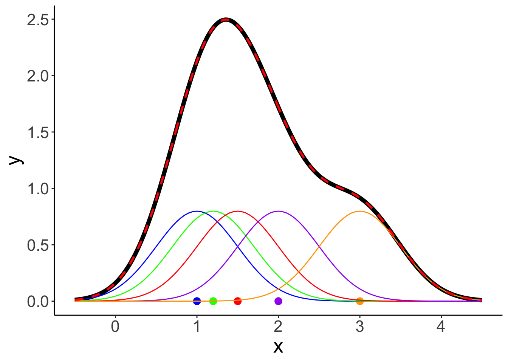
7.3.4 Cumulative probability distribution
ggplot(data = tibble(height = c(150, 210)),
mapping = aes(x = height)) +
stat_function(fun = ~ pnorm(q = .,
mean = 180,
sd = 10)) +
labs(x = "height", y = "cumulative probability") +
scale_x_continuous(breaks = c(160, 180, 200)) +
coord_cartesian(xlim = c(150, 210),
ylim = c(0, 1.05),
expand = F)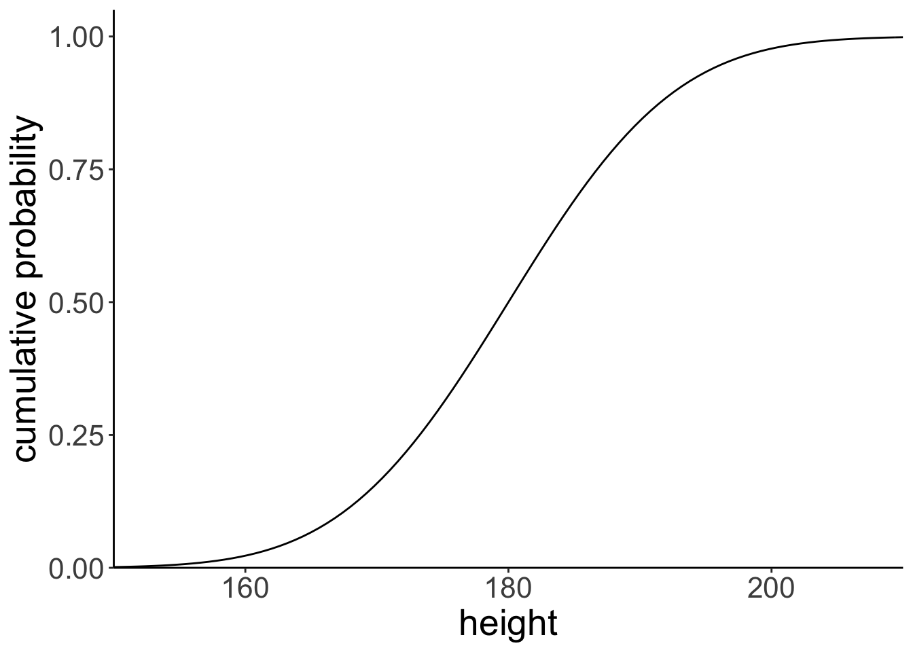
Let’s find the cumulative probability of a particular value.
tmp.x = 190
tmp.y = pnorm(tmp.x, mean = 180, sd = 10)
print(tmp.y %>% round(3))[1] 0.841# draw the cumulative probability distribution and show the value
ggplot(data = tibble(height = c(150, 210)),
mapping = aes(x = height)) +
stat_function(fun = ~ pnorm(q = .,
mean = 180,
sd = 10 )) +
annotate(geom = "point",
x = tmp.x,
y = tmp.y,
size = 4,
color = "blue") +
geom_segment(mapping = aes(x = tmp.x,
xend = tmp.x,
y = 0,
yend = tmp.y),
size = 1,
color = "blue") +
geom_segment(mapping = aes(x = -5,
xend = tmp.x,
y = tmp.y,
yend = tmp.y),
size = 1,
color = "blue") +
labs(x = "height", y = "cumulative probability") +
scale_x_continuous(breaks = c(160, 180, 200)) +
coord_cartesian(xlim = c(150, 210),
ylim = c(0, 1.05),
expand = F)
# remove all variables with tmp in their name
rm(list = str_subset(string = ls(), pattern = "tmp."))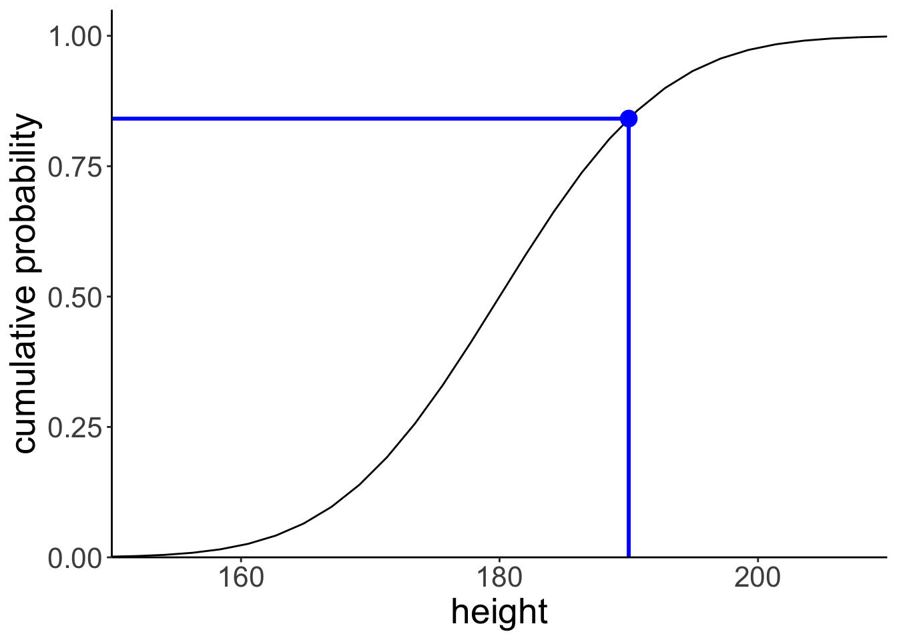
Let’s illustrate what this would look like using a normal density plot.
ggplot(data = tibble(height = c(150, 210)),
mapping = aes(x = height)) +
stat_function(fun = ~ dnorm(., mean = 180, sd = 10),
geom = "area",
fill = "lightblue",
xlim = c(150, 190)) +
stat_function(fun = ~ dnorm(., mean = 180, sd = 10),
size = 1.5) +
labs(x = "height", y = "density") +
scale_y_continuous(expand = expansion(mult = c(0, 0.1))) +
scale_x_continuous(breaks = c(160, 180, 200)) +
coord_cartesian(xlim = c(150, 210))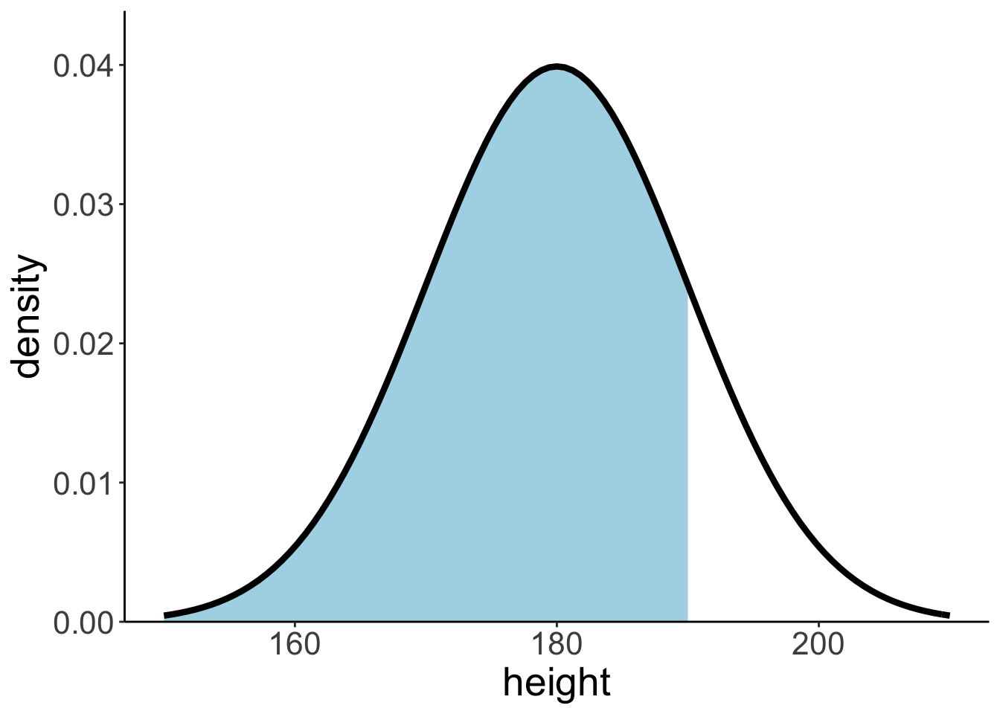
7.3.5 Inverse cumulative distribution
ggplot(data = tibble(probability = c(0, 1)),
mapping = aes(x = probability)) +
stat_function(fun = ~ qnorm(p = .,
mean = 180,
sd = 10)) +
labs(y = "height",
x = "cumulative probability") +
scale_x_continuous(breaks = seq(from = 0, to = 1, by = 0.1)) +
scale_y_continuous(limits = c(160, 200)) +
coord_cartesian(xlim = c(0, 1.05),
expand = F)
And let’s compute the inverse cumulative probability for a particular value.
tmp.x = 0.3
tmp.y = qnorm(tmp.x, mean = 180, sd = 10)
print(tmp.y %>% round(3))[1] 174.756# draw the cumulative probability distribution and show the value
ggplot(data = tibble(probability = c(0, 1)),
mapping = aes(x = probability)) +
stat_function(fun = ~ qnorm(., mean = 180, sd = 10)) +
annotate(geom = "point",
x = tmp.x,
y = tmp.y,
size = 4,
color = "blue") +
geom_segment(mapping = aes(x = tmp.x,
xend = tmp.x,
y = 160,
yend = tmp.y),
size = 1,
color = "blue") +
geom_segment(mapping = aes(x = 0,
xend = tmp.x,
y = tmp.y,
yend = tmp.y),
size = 1,
color = "blue") +
labs(x = "cumulative probability",
y = "height") +
scale_x_continuous(breaks = seq(from = 0, to = 1, by = 0.1)) +
scale_y_continuous(limits = c(160, 200)) +
coord_cartesian(xlim = c(0, 1.05),
expand = F)
# remove all variables with tmp in their name
rm(list = str_subset(string = ls(), pattern = "tmp."))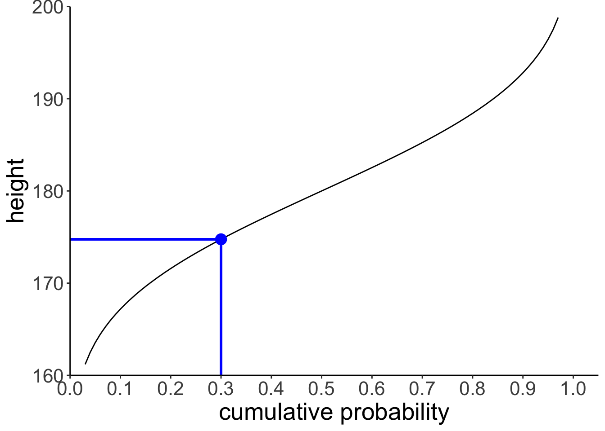
7.3.6 Computing probabilities
7.3.6.1 Via probability distributions
Let’s compute the probability of observing a particular value \(x\) in a given range.
tmp.lower = 170
tmp.upper = 180
tmp.prob = pnorm(tmp.upper, mean = 180, sd = 10) -
pnorm(tmp.lower, mean = 180, sd = 10)
tmp.prob[1] 0.3413447ggplot(data = tibble(x = c(150, 210)),
mapping = aes(x = x)) +
stat_function(fun = ~ dnorm(., mean = 180, sd = 10),
geom = "area",
fill = "lightblue",
xlim = c(tmp.lower, tmp.upper),
color = "black",
linetype = 2) +
stat_function(fun = ~ dnorm(., mean = 180, sd = 10),
size = 1.5) +
labs(x = "height",
y = "density") +
scale_y_continuous(expand = expansion(mult = c(0, 0.1))) +
scale_x_continuous(breaks = c(160, 180, 200)) +
coord_cartesian(xlim = c(150, 210))
# remove all variables with tmp in their name
rm(list = str_subset(string = ls(), pattern = "tmp."))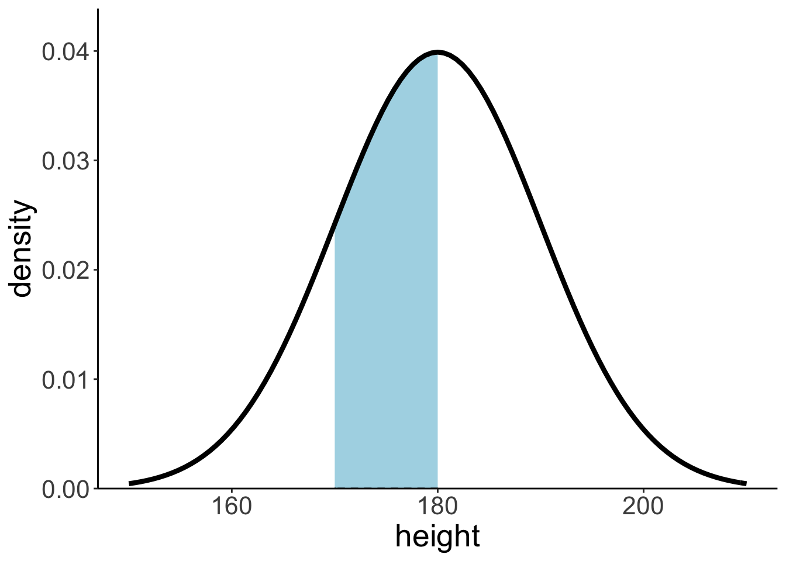
We find that ~34% of the heights are between 170 and 180 cm.
7.3.6.2 Via sampling
We can also compute the probability of observing certain events using sampling. We first generate samples from the desired probability distribution, and then use these samples to compute our statistic of interest.
# let's compute the probability of observing a value within a certain range
tmp.lower = 170
tmp.upper = 180
# make example reproducible
set.seed(1)
# generate some samples and store them in a data frame
tmp.nsamples = 10000
df.samples = tibble(height = rnorm(n = tmp.nsamples, mean = 180, sd = 10))
# compute the probability that sample lies within the range of interest
tmp.prob = df.samples %>%
filter(height >= tmp.lower,
height <= tmp.upper) %>%
summarize(prob = n()/tmp.nsamples)
# illustrate the result using a histogram
ggplot(data = df.samples,
mapping = aes(x = height)) +
geom_histogram(binwidth = 1,
color = "black",
fill = "lightblue") +
geom_vline(xintercept = tmp.lower,
size = 1,
color = "red",
linetype = 2) +
geom_vline(xintercept = tmp.upper,
size = 1,
color = "red",
linetype = 2) +
annotate(geom = "label",
label = str_c(tmp.prob %>% round(3) * 100, "%"),
x = 175,
y = 200,
hjust = 0.5,
size = 10) +
scale_y_continuous(expand = expansion(mult = c(0, 0.1))) +
labs(x = "height")
# remove all variables with tmp in their name
rm(list = str_subset(string = ls(), pattern = "tmp."))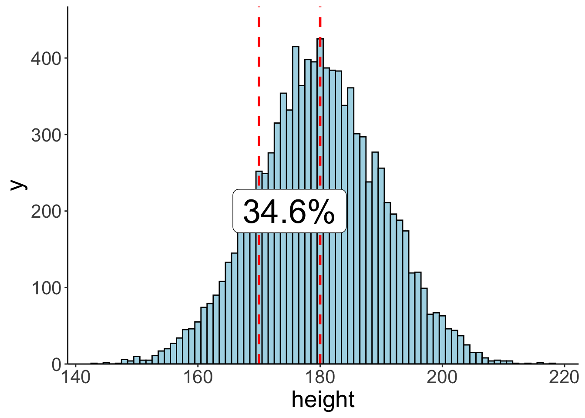 ## Breakout room exercise
7.3.7 Make the plot
ggplot(data = tibble(height = c(30, 70)),
mapping = aes(x = height)) +
stat_function(fun = ~ dgamma(., shape = 50, rate = 1))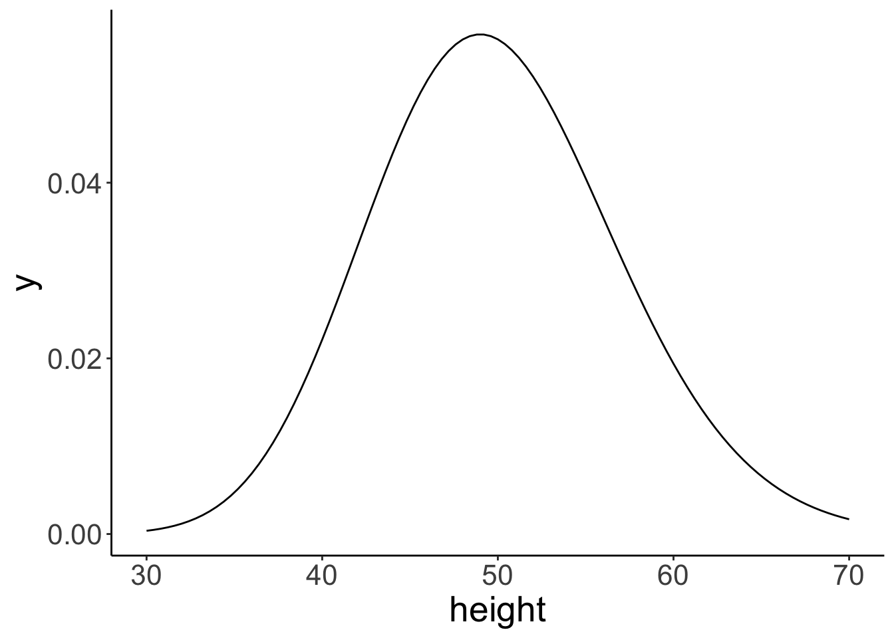
7.3.8 Analytic solutions
7.3.8.1 Question: A 60cm tall Penguin claims that no more than 10% are taller than her. Is she correct?
1 - pgamma(60, shape = 50, rate = 1)[1] 0.08440668Answer: Yes, she is correct. Only ~ 8.4% of Penguins are taller than her.
7.3.8.2 Question: Are there more penguins between 50 and 55cm or between 55 and 65cm?
first_range = pgamma(55, shape = 50, rate = 1) - pgamma(50, shape = 50, rate = 1)
second_range = pgamma(65, shape = 50, rate = 1) - pgamma(55, shape = 50, rate = 1)
first_range - second_range[1] 0.04029452Answer: There are 4% more Penguins between 50 and 55cm than between 55 and 65 cm.
7.3.9 Sampling solution
Let’s just simulate a bunch of Penguins, yay!
set.seed(1)
df.penguins = tibble(height = rgamma(n = 100000, shape = 50, rate = 1))7.3.9.1 Question: A 60cm tall Penguin claims that no more than 10% are taller than her. Is she correct?
df.penguins %>%
summarize(probability = sum(height > 60) / n())# A tibble: 1 × 1
probability
<dbl>
1 0.0835Answer: Yes, she is correct. Only ~ 8.3% of Penguins are taller than her.
7.3.9.2 Question: Are there more penguins between 50 and 55cm or between 55 and 65cm?
df.penguins %>%
summarize(probability = (sum(between(height, 50, 55)) - sum(between(height, 55, 65)))/n())# A tibble: 1 × 1
probability
<dbl>
1 0.0387Answer: There are 3.9% more Penguins between 50 and 55cm than between 55 and 65 cm.
7.4 Bayesian inference with the normal distribution
Let’s consider the following scenario. You are helping out at a summer camp. This summer, two different groups of kids go to the same summer camp. The chess kids, and the basketball kids. The chess summer camp is not quite as popular as the basketball summer camp (shocking, I know!). In fact, twice as many children have signed up for the basketball camp.
When signing up for the camp, the children were asked for some demographic information including their height in cm. Unsurprisingly, the basketball players tend to be taller on average than the chess players. In fact, the basketball players’ height is approximately normally distributed with a mean of 180cm and a standard deviation of 10cm. For the chess players, the mean height is 170cm with a standard deviation of 8cm.
At the camp site, a child walks over to you and asks you where their gym is. You gage that the child is around 175cm tall. Where should you direct the child to? To the basketball gym, or to the chess gym?
7.4.1 Analytic solution
height = 175
# priors
prior_basketball = 2/3
prior_chess = 1/3
# likelihood
mean_basketball = 180
sd_basketball = 10
mean_chess = 170
sd_chess = 8
likelihood_basketball = dnorm(height, mean = mean_basketball, sd = sd_basketball)
likelihood_chess = dnorm(height, mean = mean_chess, sd = sd_chess)
# posterior
posterior_basketball = (likelihood_basketball * prior_basketball) /
((likelihood_basketball * prior_basketball) + (likelihood_chess * prior_chess))
posterior_basketball %>% print()[1] 0.6318867.4.2 Solution via sampling
Let’s do the same thing via sampling.
# number of kids
tmp.nkids = 10000
# make reproducible
set.seed(1)
# priors
prior_basketball = 2/3
prior_chess = 1/3
# likelihood functions
mean_basketball = 180
sd_basketball = 10
mean_chess = 170
sd_chess = 8
# data frame with the kids
df.camp = tibble(kid = 1:tmp.nkids,
sport = sample(c("chess", "basketball"),
size = tmp.nkids,
replace = T,
prob = c(prior_chess, prior_basketball))) %>%
rowwise() %>%
mutate(height = ifelse(test = sport == "chess",
yes = rnorm(., mean = mean_chess, sd = sd_chess),
no = rnorm(., mean = mean_basketball, sd = sd_basketball))) %>%
ungroup
df.camp %>% print()# A tibble: 10,000 × 3
kid sport height
<int> <chr> <dbl>
1 1 basketball 165.
2 2 basketball 163.
3 3 basketball 191.
4 4 chess 160.
5 5 basketball 183.
6 6 chess 164.
7 7 chess 169.
8 8 basketball 193.
9 9 basketball 172.
10 10 basketball 177.
# … with 9,990 more rowsNow we have a data frame with kids whose height was randomly sampled depending on which sport they do. I’ve used the sample() function to assign a sport to each kid first using the prob = argument to make sure that a kid is more likely to be assigned the sport “basketball” than “chess”.
Note that the solution above is not particularly efficient since it uses the rowwise() function to make sure that a different random value for height is drawn for each row. Running this code will get slow for large samples. A more efficient solution would be the following:
# number of kids
tmp.nkids = 100000
# make reproducible
set.seed(3)
df.camp2 = tibble(
kid = 1:tmp.nkids,
sport = sample(c("chess", "basketball"),
size = tmp.nkids,
replace = T,
prob = c(prior_chess, prior_basketball))) %>%
arrange(sport) %>%
mutate(height = c(rnorm(sum(sport == "basketball"),
mean = mean_basketball,
sd = sd_basketball),
rnorm(sum(sport == "chess"),
mean = mean_chess,
sd = sd_chess)))In this solution, I take advantage of the fact that rnorm() is vectorized. That is, it can produce many random draws in one call. To make this work, I first arrange the data frame, and then draw the correct number of samples from each of the two distributions. This works fast, even if I’m drawing a large number of samples.
How can we now use these samples to answer our question of interest? Let’s see what doesn’t work first:
tmp.height = 175
df.camp %>%
filter(height == tmp.height) %>%
count(sport) %>%
pivot_wider(names_from = sport, values_from = n) %>%
summarize(prob_basketball = basketball/(basketball + chess))The reason this doesn’t work is because none of our kids is exactly 175cm tall. Instead, we need to filter kids that are within a certain height range.
tmp.height = 175
tmp.margin = 1
df.camp %>%
filter(between(height,
left = tmp.height - tmp.margin,
right = tmp.height + tmp.margin)) %>%
count(sport) %>%
pivot_wider(names_from = sport,
values_from = n) %>%
summarize(prob_basketball = basketball/(basketball + chess))# A tibble: 1 × 1
prob_basketball
<dbl>
1 0.632Here, I’ve used the between() function which is a shortcut for otherwise writing x >= left & x <= right. You can play around with the margin to see how the result changes.
7.6 Session info
Information about this R session including which version of R was used, and what packages were loaded.
sessionInfo()R version 4.1.2 (2021-11-01)
Platform: x86_64-apple-darwin17.0 (64-bit)
Running under: macOS Big Sur 10.16
Matrix products: default
BLAS: /Library/Frameworks/R.framework/Versions/4.1/Resources/lib/libRblas.0.dylib
LAPACK: /Library/Frameworks/R.framework/Versions/4.1/Resources/lib/libRlapack.dylib
locale:
[1] en_US.UTF-8/en_US.UTF-8/en_US.UTF-8/C/en_US.UTF-8/en_US.UTF-8
attached base packages:
[1] stats graphics grDevices utils datasets methods base
other attached packages:
[1] forcats_0.5.1 stringr_1.4.0 dplyr_1.0.9 purrr_0.3.4
[5] readr_2.1.2 tidyr_1.2.0 tibble_3.1.7 ggplot2_3.3.6
[9] tidyverse_1.3.1 patchwork_1.1.1 MASS_7.3-57 kableExtra_1.3.4
[13] knitr_1.39
loaded via a namespace (and not attached):
[1] svglite_2.1.0 lubridate_1.8.0 assertthat_0.2.1 digest_0.6.29
[5] utf8_1.2.2 R6_2.5.1 cellranger_1.1.0 backports_1.4.1
[9] reprex_2.0.1 evaluate_0.15 httr_1.4.3 highr_0.9
[13] pillar_1.7.0 rlang_1.0.2 readxl_1.4.0 rstudioapi_0.13
[17] jquerylib_0.1.4 rmarkdown_2.14 labeling_0.4.2 webshot_0.5.3
[21] munsell_0.5.0 broom_0.8.0 compiler_4.1.2 modelr_0.1.8
[25] xfun_0.30 pkgconfig_2.0.3 systemfonts_1.0.4 htmltools_0.5.2
[29] tidyselect_1.1.2 bookdown_0.26 fansi_1.0.3 viridisLite_0.4.0
[33] crayon_1.5.1 tzdb_0.3.0 dbplyr_2.1.1 withr_2.5.0
[37] grid_4.1.2 jsonlite_1.8.0 gtable_0.3.0 lifecycle_1.0.1
[41] DBI_1.1.2 magrittr_2.0.3 scales_1.2.0 cli_3.3.0
[45] stringi_1.7.6 farver_2.1.0 fs_1.5.2 xml2_1.3.3
[49] bslib_0.3.1 ellipsis_0.3.2 generics_0.1.2 vctrs_0.4.1
[53] tools_4.1.2 glue_1.6.2 hms_1.1.1 fastmap_1.1.0
[57] yaml_2.3.5 colorspace_2.0-3 rvest_1.0.2 haven_2.5.0
[61] sass_0.4.1